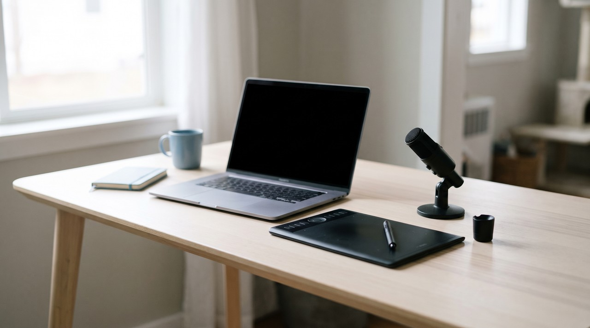
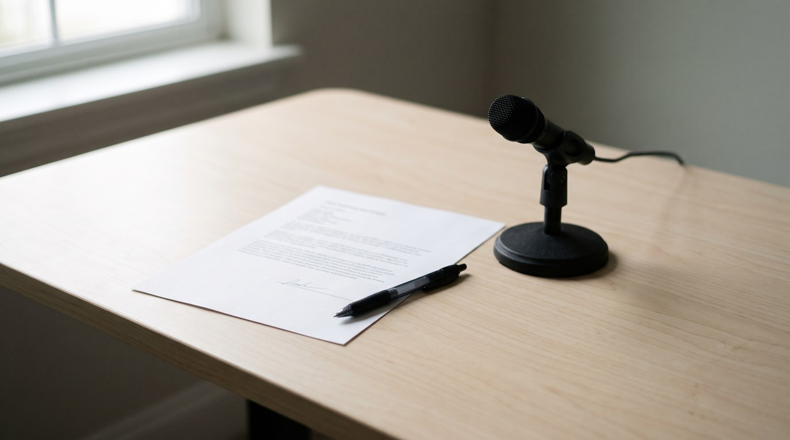

GTA 6 thumbnails, edits and voiceovers: how to sell them from Pakistan, with the real fees

If you are working from Pakistan, you can sell GTA 6 thumbnails, video edits and voiceovers on Fiverr or Upwork without needing a view payout program. Fiverr puts 80% of each order into your account and lets you withdraw it after 14 days, while Upwork takes 0% to 15% per contract. Just leave Rockstar's logo, cover art and trailer stills out of anything you sell, and get written consent before you clone a client's voice.
| What you sell | Where | What the platform keeps | The catch |
|---|---|---|---|
| Thumbnails | Fiverr or Upwork | Fiverr 20%, Upwork 0% to 15% | No Rockstar logo, cover art or trailer stills in the design |
| Video edits of the client's own footage | Fiverr or Upwork | The same fees | The client carries the takedown risk, so say it before you start |
| Voiceovers in your own voice | Fiverr or Upwork | The same fees | The script is the client's, the voice is yours, and you say so if it is a clone |
| Voiceovers in a clone of the client's voice | Fiverr or Upwork | The same fees | Only with the client's written consent, never a game character's voice |
Written by Inam, an engineer in Pakistan who sells freelance work on Upwork and Fiverr; you can see what else I build on designesh.com. I also make and sell VoiceClone, the app named near the end, so read that part knowing I have a stake in it. Last updated 16 November 2026.
GTA 6 launches on 19 November 2026, and thousands of new gaming channels will need thumbnails, video edits and voiceovers that week. If you live in Pakistan and already know how to make those things, selling your time to those channels makes much more sense than waiting around for ad revenue, since most platform view payout programs are not open here.
Sell your skill, keep Rockstar's art out of it, and put every voice permission in writing. That is the whole plan in one line. Below, I have broken down the real fees on Fiverr and Upwork, how the money actually reaches a bank account in Pakistan, and where the biggest risks sit.
Before the numbers, a few plain facts matter. Everything here is my own reading of the platform rules, so do not take it as legal or financial advice. Take-Two and Rockstar own GTA 6, this site has no connection to them, and they can take down game footage or art whenever they want. Also keep in mind that most freelancers earn very little at the start, and a brand new profile can easily wait weeks for its first order. And if a client asks you to cut clips from a streamer's videos, the streamer's permission does not make those clips eligible for YouTube ads.
What GTA 6 work can you sell as a freelancer?
When someone starts a new gaming channel, they usually struggle to handle three basic production tasks on their own: designing a thumbnail, cutting a clean video edit and recording a clear voice. Each of those three tasks is a straightforward service you can list and sell.
- Custom thumbnails that you build from scratch using your own layout, text and colors.
- Video edits made from gameplay footage the client recorded on their own copy of the game, cut and captioned to their instructions.
- Voiceovers where you read the client's script aloud using your own voice.
You can already see buyers looking for this work. When I checked on 16 November, the search results showed an Upwork job post from a new GTA VI channel looking for a thumbnail artist, and Fiverr had a page listing GTA 6 services. I am not bringing this up to promise you orders, only to show that real channels with real launch-week deadlines are already looking.
In all of these jobs, you are selling your hours and your skill while the client owns the channel. Because their channel is the one that takes the hit if a video gets removed, you owe it to them to be honest about the copyright rules below.
How much does Fiverr keep, and how do you withdraw in Pakistan?
Fiverr takes a flat cut on every order you complete. According to its payment terms, your seller account gets credited with 80% of the order price, meaning Fiverr keeps 20%. That money is not available the day you hit deliver, because Fiverr's order guide states that funds clear 14 days after an order is marked complete, or 7 days if you reach certain higher seller levels.
Once the clearing period ends, you still have to move the money out, and Fiverr's withdrawal page lists these payout methods and fees:
| Payout method | Withdrawal fee | Minimum withdrawal |
|---|---|---|
| PayPal | $0 | $1 |
| Bank transfer through Payoneer | $1 | $20 |
| Payoneer account | $3 | $10 |
| Fiverr Revenue Card | $1 to $3 | $30 |
Most Pakistani sellers I know withdraw through Payoneer, though your own Fiverr payout page will tell you which routes are active on your account. To see how the math works with simple numbers, and this is only an example, imagine a $50 thumbnail order, which puts $40 into your Fiverr balance. Moving that to a Payoneer account costs a $3 Fiverr withdrawal fee, so $37 actually leaves the platform, and your local bank's exchange rate decides the final rupee amount you get. Price your work knowing that roughly a quarter of a small order never reaches you.
How much does Upwork take, and how does the money reach a Pakistani bank?
Upwork handles fees differently through what it calls the Freelancer Service Fee. Its help page notes that this fee runs from 0% to 15% per contract. Many older guides still quote a flat 10%, which is outdated, so always check the exact fee percentage listed on a contract before you accept it.
When it comes to cashing out, Upwork's Direct to Local Bank page includes Pakistan and lists the fee at $0.99 per withdrawal, alongside possible incoming bank fees and a minimum withdrawal of $5 or higher depending on your country. Upwork also runs a Direct to Wallet page that lists JazzCash, Easypaisa, NayaPay, SadaPay and Finja for Pakistan. Since that page does not list a fixed wallet fee, check the exact charge shown inside your own account before sending money there.
Taking a client off-platform through direct messages changes the risk completely. When a channel owner pays you outside Fiverr or Upwork, you lose the order page, the dispute system and the platform holding the money while you work. For a first job with someone you do not know, I would stay on the platform and treat the fee as the cost of that protection.
Why is Rockstar art a risk in a paid GTA 6 thumbnail?
Many buyers asking for a GTA 6 thumbnail will want the official logo and cover characters on it, and that is the exact part you should refuse to sell. Rockstar's policy on posting its material, updated on January 10, 2025, states that Take-Two generally does not object to fans using its material for non-commercial purposes. The policy explains that non-commercial means "you don't make money through the game footage you post", and the same sentence rules out using the material to promote a product or service, so a thumbnail you design for a fee counts as commercial work the moment you charge for it.
On top of Rockstar's rules, Fiverr has its own rule on copyrighted images. Its Gig requirements state that every image in the Design categories must be original, and Fiverr may remove a Gig that uses copyrighted images. If you build your thumbnail portfolio samples out of Rockstar's cover art, you risk losing your Gig while your client risks losing their video.
Do not put Rockstar's logo, cover art, trailer stills or character art in work you sell. I would also avoid using an AI image generator to recreate the game's characters, because that simply copies the same protected art through a different tool. Using a still frame from the client's own recorded gameplay sits in a grayer area since it is still Rockstar's material, so tell the client plainly that it carries the same takedown risk as the footage itself.
Instead, build your thumbnails strictly out of visual pieces that belong either to you or to the client:
- A photo of the client's own face or reaction that they send over to you.
- Large, easy-to-read text of 2 to 4 words that states what the video is about.
- Original shapes, background graphics, arrows and colors you create yourself.
- A clean scene without graphic violence, since YouTube's advertiser guidelines flag graphic game violence in thumbnails for limited or zero ad revenue.
Can you sell voiceovers made with a cloned voice?
You can use AI voice cloning for paid client work, but only in two specific situations that work very differently from each other.
The first situation is using a clone of your own voice. The client sends you a script, and you deliver the audio either by speaking into a microphone or by generating it from your own trained voice model. Having your own voice cloned is useful when background noise ruins your recording window or when a client asks for a one-line script fix after delivery and you do not want to set up your mic again. Just mention in your gig description that you use a clone of your own voice, because clients who know upfront rarely care, while clients who find out by surprise usually get upset.
YouTube's page on altered or synthetic content notes that cloning your own voice for narration or dubbing does not require a synthetic content label. Because that rule is written for a channel owner using their own voice, and the page says nothing about a freelancer's cloned voice on a client's upload, tell the client your audio is cloned so they can decide whether to check the label box when they publish.
The second situation is cloning the client's voice. Some creators want every upload to sound like them without having to record every script themselves, so they will ask you to train a model on their voice and generate the narration. You should only take that job if the actual owner of the voice gives written permission, and that consent must come directly from that person rather than a channel manager messaging on their behalf.
Never clone a GTA 6 character's voice for a client, at any price. Every character's voice belongs to a real voice actor and the game audio belongs to Take-Two, which puts two separate risks on your shoulders at once. I explained this problem in why you should not clone a GTA 6 character's voice, and you can read the broader rules in is voice cloning legal.

What should the written consent say before you clone a client's voice?
You do not need a complicated contract, because a short, clear message inside the order chat works as long as it comes straight from the person whose voice you are cloning. I am not a lawyer and this is not a legal form, so treat these points as the basic written record I would require before training any voice model:
- Their full name and a clear statement confirming that the voice in the audio sample belongs to them.
- A clear statement asking you to build an AI voice clone from that sample.
- The exact purpose of the clone, such as generating voiceovers for their own named YouTube channel.
- Your agreement that you will never use their voice model for any other client or project.
- What happens to the raw audio sample and the trained model once the order finishes, such as confirming you will delete both files.
- The date the message was sent.
Store their voice sample alongside that consent message. When both arrive inside the platform's order chat, you have a dated record that the platform also holds. If a buyer refuses to put those points in writing, take that refusal as your warning and walk away from the order.
What should you agree with a client before you start?
Most freelance disputes happen because buyer and seller assumed different things at the start of the job. Before you accept any GTA 6 order, spell out these five boundaries in your first message:
- Where the footage comes from. State that you will only edit gameplay recorded by the client from their own copy of the game on or after 19 November, and never leaked or pre-release clips from anywhere.
- What stays out of the edit. Make clear that you will not cut together the game's ending, standalone cutscenes or in-game TV shows as separate videos, since Rockstar's policy specifically targets those for takedowns.
- Who carries the takedown risk. Explain that because they own the channel, any video removal is their risk, while your fee covers the editing or design hours you put in.
- What you cannot promise. Tell them upfront that you cannot promise views, subscribers or YouTube ad approval, because no honest freelancer can control the algorithm.
- How changes are billed. Agree on how many revisions are included in your base price and what you will charge if they need a new voiceover line recorded after delivery.
Where does VoiceClone fit?
I built my desktop app VoiceClone because I narrate my own videos and got tired of paying a monthly subscription just to use my own voice. It runs GPT-SoVITS locally on a Windows 10 or 11 computer, which means it works completely offline and a voice sample never leaves your machine. That local setup matters even more when you handle client work, because a buyer's voice recording stays private on your drive instead of sitting on a third-party cloud server. Having an NVIDIA graphics card speeds up the training and generation, though the app also runs on a standard processor at a slower speed.
Of course, a local voice tool will not cover every freelance task you might take on. VoiceClone is built mainly for English, so if a client wants Urdu narration, a decent microphone in a quiet room is still the right choice. The software does not make thumbnails or edit video either, and you should only ever load your own voice into it or the voice of a client who gave written consent.
You can use the free tier to clone and fully train one voice a single time, and after that it gives you 3 generations so you can hear the quality. If it fits your workflow, the $49 one time license is paid once with no subscription after it, and the free version sits on the download page. If you want a broader look at which routes pay and which do not, read GTA 6 ways to make money from Pakistan.
FAQ
Can I use the GTA 6 logo in a thumbnail I sell?
No, I would leave it out. Rockstar's policy only tolerates non-commercial use, and any thumbnail you design for a fee counts as commercial work. Fiverr also requires every image in its Design categories to be original and can remove a Gig that includes copyrighted artwork.
How much does Fiverr take from a seller in Pakistan?
Fiverr puts 80% of the order price into your account and keeps 20%, and most sellers have to wait 14 days after completing an order before the funds clear. When you cash out, withdrawal fees run from $0 to $3 depending on the payout method you pick.
What does Upwork charge freelancers?
Upwork charges a Freelancer Service Fee between 0% and 15% per contract, and you can see the exact percentage before accepting an offer. Sending your earnings to a local bank in Pakistan costs $0.99 per withdrawal, though some local banks also deduct incoming transfer fees.
Can I clone a client's voice for their GTA 6 videos?
Yes, but only after the person whose voice it is gives you written consent explaining how the clone will be used. Never clone a character's voice from the game, because that voice belongs to a real actor.
Sources, opened and read on 16 November 2026: Rockstar's Grand Theft Auto VI page and its policy on posting copyrighted material; Fiverr's payment terms (last update October 2026), order process guide, withdrawal page and Gig requirements; Upwork's help pages on the Freelancer Service Fee, Direct to Local Bank and Direct to Wallet; YouTube Help pages on altered or synthetic content and the advertiser-friendly guidelines. This is my reading and not legal advice.
Hear your own voice come back.
The free Windows app clones and fully trains one voice, yours, on your own PC. No account, no upload, and the download starts right away.